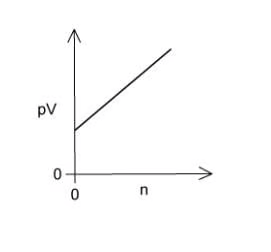
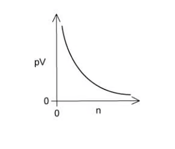
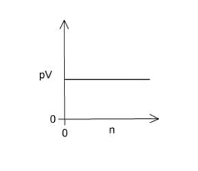
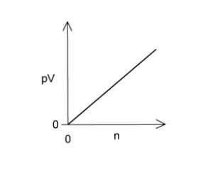

4 States of matter
Structures, particle motion and the ideal gas equation
4 States of matter
本章对应 CIE 9701 AS Chemistry 的 States of matter。内容覆盖 solid structures、particle movement、changes of state、ideal gases、real gases、气体实验条件以及 \(pV=nRT\) 的应用。
Learning objectives
学完本章后，你应该能够：
- describe the arrangement and movement of particles in solids, liquids and gases;
- relate melting, boiling, sublimation and condensation to energy changes;
- distinguish simple molecular, giant covalent, ionic and metallic structures;
- explain why substances have different melting points, boiling points and electrical conductivity;
- use \(pV=nRT\) to calculate pressure, volume, temperature, amount and molar mass;
- convert units correctly and use temperature in kelvin;
- state the assumptions of the ideal gas model;
- explain why real gases deviate from ideal behaviour at high pressure and low temperature.
Key ideas
- Use kelvin, pascal and cubic metres in \(pV=nRT\) when using \(R=8.314\ \mathrm{J\ mol^{-1}\ K^{-1}}\).
- At constant temperature, pressure and volume are inversely related; use kelvin whenever a temperature appears in a gas-law relationship.
- Real-gas deviations have two causes: attractions between particles and the finite volume of particles.
4.1 Particle model and changes of state
Solids, liquids and gases
In a solid, particles are closely packed in fixed positions and vibrate about those positions. In a liquid, particles remain close together but can move past one another. In a gas, particles are far apart and move rapidly in random directions.
The particle model links macroscopic properties to microscopic behaviour. Solids have a fixed shape and volume; liquids have a fixed volume but take the shape of their container; gases have neither a fixed shape nor a fixed volume and are easily compressed.
| Change | Direction | Energy change | Particle description |
|---|---|---|---|
| melting | solid to liquid | endothermic | particles gain enough energy to move past one another |
| boiling / evaporation | liquid to gas | endothermic | particles separate widely |
| sublimation | solid to gas | endothermic | particles escape directly from the lattice |
| freezing | liquid to solid | exothermic | particles lose energy and become fixed in a lattice |
| condensation | gas to liquid | exothermic | particles lose energy and come closer together |
During a change of state, the temperature remains constant while energy is used to overcome attractions between particles. In a heating curve, a flat section therefore represents a change of state.
Evaporation occurs only at the liquid surface and can occur below the boiling point. Boiling occurs throughout the liquid when its vapour pressure equals the external pressure. Both processes are endothermic because intermolecular attractions are overcome.
4.2 Structures and physical properties
Simple molecular structures
Simple molecular substances contain small molecules. Strong covalent bonds hold atoms together inside each molecule, but weak intermolecular forces act between molecules. Melting and boiling usually overcome intermolecular forces, so these substances often have low melting and boiling points.
They do not conduct electricity because they contain no mobile ions or delocalised electrons. Exceptions may occur when a substance reacts or ionises in solution.
Giant structures
Giant ionic structures contain oppositely charged ions in a large lattice. They have high melting points and conduct when molten or dissolved because ions are mobile.
Giant covalent structures contain atoms joined by covalent bonds throughout the lattice. Diamond has a very high melting point and does not conduct electricity. Graphite has layers of carbon atoms and one delocalised electron per carbon, so it conducts along the layers.
Metallic structures contain positive ions and delocalised electrons. Metals conduct as solids and liquids, and layers can slide because metallic bonding is non-directional.
4.3 The ideal gas equation
\(pV=nRT\)
For an ideal gas:
\[pV=nRT\]
where \(p\) is pressure in Pa, \(V\) is volume in \(\mathrm{m^3}\), \(n\) is amount in mol, \(R=8.314\ \mathrm{J\ mol^{-1}\ K^{-1}}\), and \(T\) is temperature in K.
Useful rearrangements are:
\[p=\frac{nRT}{V}\qquad V=\frac{nRT}{p}\qquad n=\frac{pV}{RT}\qquad T=\frac{pV}{nR}\]
Always convert \(^\circ\mathrm{C}\) to K using \(T/\mathrm{K}=\theta/{}^\circ\mathrm{C}+273\) and convert \(\mathrm{cm^3}\) to \(\mathrm{m^3}\) by multiplying by \(10^{-6}\).
| Quantity supplied | SI conversion for \(pV=nRT\) |
|---|---|
| pressure in kPa | multiply by \(10^3\) to obtain Pa |
| pressure in atm | convert to Pa using the stated conversion/data booklet |
| volume in dm3 | multiply by \(10^{-3}\) to obtain m3 |
| volume in cm3 | multiply by \(10^{-6}\) to obtain m3 |
| temperature in °C | add 273 to obtain K |
Worked example · Gas pressure
Calculating pressure
A sample contains \(0.0200\ \mathrm{mol}\) of gas in \(2.00\ \mathrm{dm^3}\) at \(27^\circ\mathrm{C}\). Calculate the pressure.
\[T=27+273=300\ \mathrm{K},\qquad V=2.00\times10^{-3}\ \mathrm{m^3}\]
\[p=\frac{nRT}{V}=\frac{0.0200\times8.314\times300}{2.00\times10^{-3}}=2.49\times10^4\ \mathrm{Pa}\]
Molar mass of a gas
If the mass of a gas sample is \(m\) grams, then \(n=m/M\) and:
\[pV=\frac{m}{M}RT\]
Therefore:
\[M=\frac{mRT}{pV}\]
Use consistent SI units in the equation. The numerical answer for \(M\) is in \(\mathrm{g\ mol^{-1}}\) if \(m\) is entered in grams.
4.4 Ideal and real gases
Assumptions of the ideal gas model
An ideal gas is assumed to have particles with negligible volume and no intermolecular forces. Particles move randomly, collisions are perfectly elastic and the average kinetic energy depends only on absolute temperature.
An ideal gas obeys \(pV=nRT\) at all pressures and temperatures. Real gases approach ideal behaviour at low pressure and high temperature, when particles are far apart and attractions are less important.
At high pressure, the volume occupied by real particles is no longer negligible. At low temperature, particles move more slowly and intermolecular attractions become important. Real gases then deviate from the ideal equation.
Attractions pull particles back from the container wall, giving a measured pressure lower than the ideal-gas prediction. Finite particle volume leaves less free space than assumed, tending to give a pressure higher than the ideal prediction. Deviations are greatest at low temperature and high pressure, close to liquefaction.
The gas that behaves most nearly ideally under ordinary conditions is a small, non-polar atom such as helium. Large polar molecules such as ammonia show greater deviation because they have stronger intermolecular attractions.
4.5 Gas laws and experimental conditions
At constant temperature and amount:
\[pV=\text{constant}\]
so pressure and volume are inversely proportional. At constant pressure and amount:
\[\frac{V}{T}=\text{constant}\]
so volume is directly proportional to kelvin temperature. At constant volume and amount:
\[\frac{p}{T}=\text{constant}\]
so pressure is directly proportional to kelvin temperature.
When determining a gas molar mass experimentally, a higher pressure generally gives a larger measured pressure signal, while a higher temperature reduces the effect of condensation and helps a gas remain gaseous. The most accurate conditions depend on the apparatus, but the data must always be substituted in SI units.
Chapter checklist
Multiple choice questions
4 States of matter - Multiple Choice: Easy
Question 1 · Giant covalent structure · 1.4 Choice Easy Q1
Which solid has a giant covalent lattice structure?
Show explanation
C. \(\ce{SiO2}\) contains a giant covalent network. Calcium fluoride is ionic, nickel is metallic and sulfur is simple molecular.
Question 2 · Structure and melting point · 1.4 Choice Easy Q2
Which substance is expected to have the highest melting point?
Show explanation
D. Diamond has strong covalent bonds throughout a giant lattice.
Question 3 · Ideal gas equation · 1.4 Choice Easy Q3
Which graph is consistent with an ideal gas at constant pressure and temperature when \(pV\) is plotted against \(n\)?




Show explanation
A. From \(pV=nRT\), \(pV\) is directly proportional to \(n\) when \(T\) is constant.
Question 4 · Molar mass from \(pV=nRT\) · 1.4 Choice Easy Q4
Which expression gives the molar mass \(M\) of a gas sample of mass \(m\) grams?
Show explanation
A. Substitute \(n=m/M\) into \(pV=nRT\) and rearrange.
Question 5 · Ideal behaviour · 1.4 Choice Easy Q5
Which gas behaves least like an ideal gas at room temperature?
Show explanation
B. Ammonia is polar and has relatively strong intermolecular attractions.
Question 6 · Identifying structures · 1.4 Choice Easy Q6
Substance R conducts when molten but not as a solid, S has a low boiling point and T has a high melting point but does not conduct. Which structures could R, S and T have?
Show explanation
C. R is ionic, S is simple molecular and T is giant covalent such as diamond.
Question 7 · Energy and state changes · 1.4 Choice Easy Q7
Which change is endothermic?
Show explanation
A. Sublimation requires energy to overcome attractions and separate particles.
4 States of matter - Multiple Choice: Medium
Question 8 · Conditions for ideal behaviour · 1.4 Choice Medium Q1
Under which conditions does a real gas behave most nearly ideally?
Show explanation
A. Particles are far apart at low pressure and attractions matter less at high temperature.
Question 9 · Identifying three structures · 1.4 Choice Medium Q2
Which row correctly identifies X, Y and Z?
| Substance | Melting point / \(^\circ\mathrm{C}\) | Boiling point / \(^\circ\mathrm{C}\) | Solid conductivity | Liquid conductivity |
|---|---|---|---|---|
| X | 801 | 1413 | poor | good |
| Y | 2852 | 3600 | poor | good |
| Z | 3550 | 4827 | good | unknown |
Show explanation
B. X and Y are ionic, with Y having the stronger lattice. Graphite has a high melting point and conducts through delocalised electrons.
Question 10 · Pressure calculation · 1.4 Choice Medium Q3
A \(0.96\ \mathrm{g}\) sample of hydrogen occupies \(7.0\times10^{-3}\ \mathrm{m^3}\) at \(303\ \mathrm{K}\). What is its pressure? Use \(R=8.314\ \mathrm{J\ mol^{-1}\ K^{-1}}\).
Show explanation
B. \(n=0.96/2.0=0.48\ \mathrm{mol}\) and \(p=nRT/V=1.73\times10^5\ \mathrm{Pa}=172.7\ \mathrm{kPa}\).
Question 11 · Mass of oxygen · 1.4 Choice Medium Q4
A \(5370\ \mathrm{cm^3}\) sample of oxygen is at \(60^\circ\mathrm{C}\) and \(103000\ \mathrm{Pa}\). What is its mass?
Show explanation
B. Use \(T=333\ \mathrm{K}\) and \(V=5.370\times10^{-3}\ \mathrm{m^3}\). The amount is about \(0.200\ \mathrm{mol}\) and the mass is \(0.200\times32.0=6.4\ \mathrm{g}\).
Question 12 · Temperature calculation · 1.4 Choice Medium Q5
A \(5.35\ \mathrm{g}\) sample of chlorine gas occupies \(1.247\times10^{-3}\ \mathrm{m^3}\) at \(1.00\times10^5\ \mathrm{Pa}\). What is its temperature?
Show explanation
D. \(n=5.35/71.0=0.0754\ \mathrm{mol}\) and \(T=pV/(nR)\approx200\ \mathrm{K}\).
Question 13 · Boyle’s law · 1.4 Choice Medium Q6
A bubble has volume \(200\ \mathrm{cm^3}\) at a pressure of \(101\ \mathrm{kPa}\). What is its volume at the sea bed where the pressure is \(2020\ \mathrm{kPa}\)? Temperature is constant.
Show explanation
A. \(p_1V_1=p_2V_2\), so \(V_2=101\times200/2020=10\ \mathrm{cm^3}\).
Question 14 · Gas volume and reacting mass · 1.4 Choice Medium Q7
\[\ce{2Na(s) + 2H2O(l) -> 2NaOH(aq) + H2(g)}\]
What mass of sodium reacts to produce \(960\ \mathrm{cm^3}\) of hydrogen at RTP?
Show explanation
B. \(n(\ce{H2})=0.960/24.0=0.0400\ \mathrm{mol}\), so \(n(\ce{Na})=0.0800\ \mathrm{mol}\) and mass \(=0.0800\times23.0=1.84\ \mathrm{g}\).
4 States of matter - Multiple Choice: Hard
Question 15 · Identifying an unknown gas · 1.4 Choice Hard Q1
A \(0.300\ \mathrm{dm^3}\) tube is filled with a gas at \(27^\circ\mathrm{C}\) and \(101\ \mathrm{kPa}\). The mass increases by \(1.02\times10^{-3}\ \mathrm{kg}\). Which gas could it be?
Show explanation
D. \(n=pV/RT\approx0.0122\ \mathrm{mol}\). With mass \(1.02\ \mathrm{g}\), \(M\approx83.6\ \mathrm{g\ mol^{-1}}\), close to krypton.
Question 16 · Mass from ideal gas data · 1.4 Choice Hard Q2
The volume of a methane sample is \(5.25\ \mathrm{dm^3}\) at \(50^\circ\mathrm{C}\) and \(102\ \mathrm{kPa}\). What is its mass?
Show explanation
B. \(n=pV/RT\approx0.199\ \mathrm{mol}\); mass \(=0.199\times16.0\approx3.20\ \mathrm{g}\).
Question 17 · Metal oxide and gas volume · 1.4 Choice Hard Q3
A \(2.00\ \mathrm{g}\) metal reacts with \(599\ \mathrm{cm^3}\) oxygen at \(298\ \mathrm{K}\) and \(1\ \mathrm{atm}\) to form an oxide containing \(\ce{O^{2-}}\). Which metal could be used?
Show explanation
C. The oxygen amount is about \(0.0245\ \mathrm{mol}\). The sodium-to-oxygen ratio is consistent with formation of \(\ce{Na2O}\) from the given masses.
Question 18 · Mass of ammonia · 1.4 Choice Hard Q4
A sample of ammonia occupies \(5.27\times10^{-5}\ \mathrm{m^3}\) at \(60^\circ\mathrm{C}\) and \(75\ \mathrm{kPa}\). What is its mass?
Show explanation
C. \(n=pV/RT\approx1.43\times10^{-3}\ \mathrm{mol}\) and mass \(=n\times17.0\approx2.4\times10^{-2}\ \mathrm{g}\).
Question 19 · Noble gas identification · 1.4 Choice Hard Q5
An unknown noble gas has mass \(0.800\ \mathrm{g}\), volume \(560\ \mathrm{cm^3}\), pressure \(101\ \mathrm{kPa}\) and temperature \(340\ \mathrm{K}\). Which gas is it?
Show explanation
C. \(n=pV/RT\approx0.0200\ \mathrm{mol}\), so \(M=0.800/0.0200\approx40.0\ \mathrm{g\ mol^{-1}}\), identifying argon.
Question 20 · Real-gas deviation · 1.4 Choice Hard Q6
Under which conditions is a real gas most likely to show the greatest deviation from ideal behaviour?
Show explanation
A. At high pressure particle volume matters; at low temperature attractions are more significant.
Structured questions
4 States of matter - Structured Questions: Easy
Example 1 · Particle model and gas pressure · 1.4 SQ Easy Q1
(a) Describe the arrangement and movement of particles in a gas. [3 marks]
(b) Explain why a gas exerts pressure. [1 mark]
(c) State one difference between the movement of particles in a liquid and in a gas. [1 mark]
Show mark scheme / model answer
- (a) Particles are far apart, move rapidly and randomly in all directions, and collide elastically with each other and the container.
- (b) Pressure is caused by collisions of gas particles with the walls of the container.
- (c) Liquid particles are close together and can move past one another; gas particles are widely separated and move more freely.
Example 2 · Gas laws · 1.4 SQ Easy Q2
(a) State the relationship between volume and pressure for a fixed amount of gas at constant temperature. [1 mark]
(b) State the relationship between volume and absolute temperature at constant pressure. [1 mark]
(c) A gas occupies \(250\ \mathrm{cm^3}\) at \(100\ \mathrm{kPa}\). Calculate its volume at \(250\ \mathrm{kPa}\) if temperature is constant. [2 marks]
Show mark scheme / model answer
- (a) \(pV\) is constant, so pressure and volume are inversely proportional.
- (b) \(V/T\) is constant, so volume is directly proportional to kelvin temperature.
- (c) \(p_1V_1=p_2V_2\), so \(V_2=(100\times250)/250=100\ \mathrm{cm^3}\).
Example 3 · Ideal gas assumptions · 1.4 SQ Easy Q3
(a) State the two assumptions about particles and intermolecular forces in the ideal gas model. [2 marks]
(b) Explain why helium behaves very nearly like an ideal gas. [2 marks]
(c) State the units required for \(p\), \(V\) and \(T\) in \(pV=nRT\). [3 marks]
Show mark scheme / model answer
- (a) Particle volume is negligible compared with the container volume; there are no intermolecular attractions.
- (b) Helium atoms are small and non-polar, so their volume and attractions are both very small.
- (c) \(p\) in Pa, \(V\) in \(\mathrm{m^3}\) and \(T\) in K.
4 States of matter - Structured Questions: Medium
Example 4 · \(\ce{C60}\) and diamond · 1.4 SQ Medium Q1
(a) Describe the structure of solid \(\ce{C60}\). [2 marks]
(b) Explain why \(\ce{C60}\) sublimes at a much lower temperature than diamond. [4 marks]
(c) State the type of structure in diamond. [1 mark]
Show mark scheme / model answer
- (a) It consists of discrete \(\ce{C60}\) molecules; each molecule contains covalent bonds, and weak intermolecular forces act between molecules.
- (b) Sublimation of \(\ce{C60}\) overcomes intermolecular forces between molecules. Diamond has a giant covalent lattice, so covalent bonds throughout the structure must be broken and much more energy is required.
- (c) Giant covalent structure.
Example 5 · Molar mass of a gas · 1.4 SQ Medium Q2
A gas sample has mass \(0.800\ \mathrm{g}\), volume \(560\ \mathrm{cm^3}\), pressure \(101\ \mathrm{kPa}\) and temperature \(340\ \mathrm{K}\).
(a) Calculate the amount of gas. [2 marks]
(b) Calculate its molar mass and identify the gas if it is a noble gas. [3 marks]
Show mark scheme / model answer
- (a) \(V=5.60\times10^{-4}\ \mathrm{m^3}\); \(n=pV/RT=(101000\times5.60\times10^{-4})/(8.314\times340)=0.0200\ \mathrm{mol}\).
- (b) \(M=m/n=0.800/0.0200=40.0\ \mathrm{g\ mol^{-1}}\), so the gas is argon.
Example 6 · Gas volume and reaction stoichiometry · 1.4 SQ Medium Q3
Sodium reacts with water:
\[\ce{2Na(s) + 2H2O(l) -> 2NaOH(aq) + H2(g)}\]
(a) Calculate the amount of hydrogen in \(960\ \mathrm{cm^3}\) at RTP. [1 mark]
(b) Calculate the amount and mass of sodium required. [3 marks]
(c) Explain why the equation must be balanced before using mole ratios. [1 mark]
Show mark scheme / model answer
- (a) \(n(\ce{H2})=0.960/24.0=0.0400\ \mathrm{mol}\).
- (b) The ratio is \(2:1\), so \(n(\ce{Na})=0.0800\ \mathrm{mol}\) and mass \(=0.0800\times23.0=1.84\ \mathrm{g}\).
- (c) Coefficients in a balanced equation represent the conserved mole ratio of reacting particles.
4 States of matter - Structured Questions: Hard
Example 7 · Phosphine and ideal-gas volume · 1.4 SQ Hard Q1
Phosphine is formed by decomposition of phosphorous acid:
\[\ce{4H3PO3(s) -> PH3(g) + 3H3PO4(s)}\]
(a) State the shape and bond angle in \(\ce{PH3}\). [2 marks]
(b) \(3.45\times10^{-2}\ \mathrm{mol}\) of \(\ce{H3PO3}\) decomposes completely at \(100\ \mathrm{kPa}\) and \(210^\circ\mathrm{C}\). Calculate the volume of \(\ce{PH3}\) in \(\mathrm{cm^3}\). [3 marks]
Show mark scheme / model answer
- (a) Trigonal pyramidal, with a bond angle of about \(107^\circ\).
- (b) \(n(\ce{PH3})=0.0345/4=0.008625\ \mathrm{mol}\); \(T=483\ \mathrm{K}\); \(V=nRT/p=0.000347\ \mathrm{m^3}=347\ \mathrm{cm^3}\).
Example 8 · Oxygen mass and electrons · 1.4 SQ Hard Q2
A sample of oxygen gas occupies \(95.0\ \mathrm{cm^3}\) at \(303\ \mathrm{kPa}\) and \(28^\circ\mathrm{C}\).
(a) Calculate the mass of oxygen in the sample. [3 marks]
(b) Calculate the number of electrons in the sample. [2 marks]
Show mark scheme / model answer
- (a) \(n=pV/RT=(303000\times9.50\times10^{-5})/(8.314\times301)=0.0115\ \mathrm{mol}\). Mass \(=0.0115\times32.0=0.368\ \mathrm{g}\).
- (b) Each \(\ce{O2}\) molecule has 16 electrons. Number of electrons \(=0.0115\times6.02\times10^{23}\times16\approx1.11\times10^{23}\).
Example 9 · Mixing gases in connected vessels · 1.4 SQ Hard Q3
Vessel X contains pure \(\ce{CO2}\) at \(25^\circ\mathrm{C}\) and \(1.00\times10^5\ \mathrm{Pa}\). Vessel Y has been evacuated and has a volume twice that of X. The valve is opened and the whole system is heated to \(160^\circ\mathrm{C}\).
(a) Explain why the final volume is three times the volume of X. [1 mark]
(b) Calculate the final pressure. [3 marks]
(c) State one reason why real \(\ce{CO2}\) may not obey the calculation exactly. [1 mark]
Show mark scheme / model answer
- (a) The gas occupies vessel X plus the evacuated vessel Y, whose volume is twice X.
- (b) Use \(p_1V_1/T_1=p_2V_2/T_2\). With \(V_2=3V_1\), \(T_1=298\ \mathrm{K}\) and \(T_2=433\ \mathrm{K}\), \(p_2=1.00\times10^5\times(1/3)\times(433/298)=4.84\times10^4\ \mathrm{Pa}\).
- (c) \(\ce{CO2}\) has intermolecular attractions and particles with non-negligible volume.
Example 10 · Comparing ideal and real gases · 1.4 SQ Hard Q4
(a) Explain why a real gas deviates from ideal behaviour at high pressure. [2 marks]
(b) Explain why a real gas deviates from ideal behaviour at low temperature. [2 marks]
(c) Compare helium and ammonia in terms of their expected ideal-gas behaviour. [2 marks]
(d) State how the assumptions of the ideal-gas model affect the meaning of \(pV=nRT\). [2 marks]
Show mark scheme / model answer
- (a) Particles are close together, so their own volume is no longer negligible compared with the container volume.
- (b) Particles have lower kinetic energy and intermolecular attractions become significant.
- (c) Helium is small and non-polar and behaves more ideally. Ammonia is larger and polar and deviates more.
- (d) The equation assumes negligible particle volume and no intermolecular forces; real gases obey it only approximately under suitable conditions.